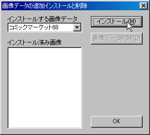
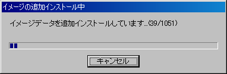
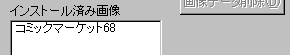
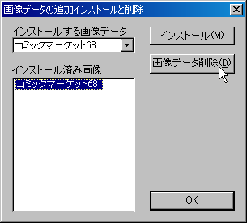

メインメニューの「ファイル」→「画像データの追加・削除」を選ぶことで、画像データ（サークルカット画像及び会場マップ画像）を、後からハードディスクに追加することが可能です。
また、使用しなくなった画像データをハードディスクから削除することもできます。
画像データを追加するには、メインメニューの「ファイル」→「画像データの追加・削除」からダイアログを表示します。

「インストールする画像データ」ボックスには、現在のデータベースに含まれているサークルデータのコミックマーケット回数がリストで表示されます。追加したい画像データのコミックマーケット回数を選択し、「インストール」ボタンを押してください。
画像データの場所を問い合わせるダイアログが表示されますので、選択したコミックマーケット回数のコミックマーケットカタログDVD-ROMをDVD-ROMドライブに入れ、ダイアログからそのドライブを選択してください。
DVD-ROM上に画像データが正しく見つかれば、経過を表示するダイアログが表示され、画像の追加が行われます。

正常に終了すると、ダイアログの「インストール済み画像」欄に追加した画像データのコミックマーケット回数が表示されます。

不要になった画像データをハードディスクから削除する場合も、メインメニューの「ファイル」→「画像データの追加・削除」からダイアログを表示します。
「インストール済み画像」欄に、現在ハードディスクにインストールされている画像データのコミックマーケット回数一覧が表示されますので、削除したいコミックマーケット回数を選び「画像データ削除」ボタンを押します。

正常に終了すると、削除した画像データのコミックマーケット回数が「インストール済み画像」欄から消えます。